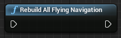
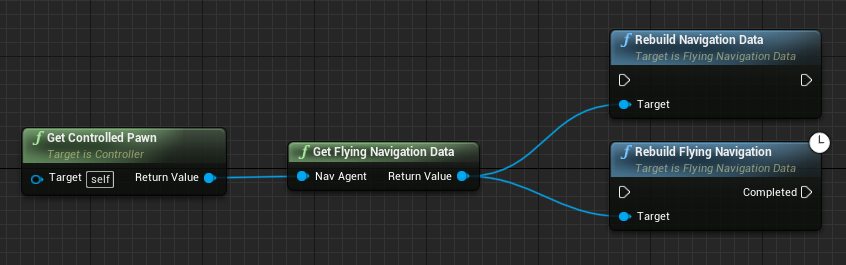
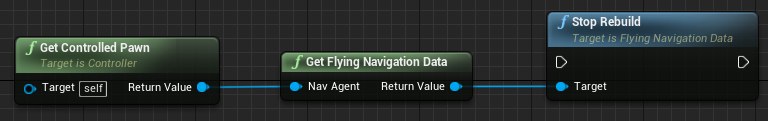

Terminology
Recast
Recast is a third-party library for automatic navmesh generation, distributed with Unreal Engine.
This is the normal navigation you would be familiar with for NavWalking characters.
UNavigationSystem
A singleton class owned by the World which handles all navigation queries and building requests, delegating to the relevant NavigationData actor.
It is implementation agnostic.
ANavigationData
This is an actor that is automatically spawned in the world when a NavMeshBoundsVolume is added to the level.
This actor contains a specific navigation implementation.
ARecastNavMesh and AFlyingNavigationData are both subclasses of ANavigationData, where ARecastNavMesh implements Recast pathfinding and AFlyingNavigationData implements a Sparse Voxel Octree for 3D pathfinding.
FNavAgentProperties
Used in Project Settings->Navigation System/Supported Agents and UNavMovementComponent/Movement Capabilities.
This is a simple struct that defines an agent to the navigation system.
It specifies the agent radius, height, step height and most importantly which ANavigationData actor it uses for pathfinding.
To use the Flying Navigation System, set PreferredNavData to AFlyingNavigationData in your flying Pawn's movement component.
How the Navigation System chooses a NavigationData for a given pawn
The pawn must have a MovementComponent derived from UNavMovementComponent in order to be involved in AI pathfinding.
This includes UPawnMovementComponent, and therefore UFloatingPawnMovement and UCharacterMovementComponent.
UNavMovementComponent has a FNavAgentProperties setting called Movement Capabilities,
which determines what kind of agent the pawn is.
The Radius and Height can be auto-set with the Update Nav Agent With Owners Collision option, but I wouldn't recommend this for reasons detailed below.
Setting the PreferredNavData to FlyingNavigationData will make sure the pawn uses the Flying Navigation System.
However, sometimes you will want to build multiple octrees, one for a large radius and one for a small radius.
In this case, you would set up multiple agents in Project Settings, each with a different radius and/or height.
This will spawn multiple FlyingNavigationData actors in your level, for which you can set different MaxDetailSize etc.
Now, to choose which FlyingNavigationData to query, the agent calls:
NavSys->GetNavDataForProps(AgentProps, AsNavAgent->GetNavAgentLocation());
This function iterates through the available NavigationData actors to find the one with the closest Radius and Height.
In essence, all this means is that the first priority is PreferredNavData, then AgentRadius and AgentHeight.
This is why I wouldn't recommend automatically setting the value with the Update Nav Agent With Owners Collision option.
If you match up the values exactly between Project Settings and Movement Capabilities everything should work as expected.
Octree
A data structure which partitions a 3D space by recursively subdividing a cube into eight subcubes. Each node as 0 or 8 children.
A Sparse Voxel Octree (SVO) is an octree which is designed to have most of its volume empty.
Storage space and computation time are concentrated in the detailed areas, and not wasted in large open spaces.
Nodes and SubNodes
A node of the octree is one of those subdivisions in the diagram above.
It’s easiest to visualise it as a node of the tree on the right.
For memory efficiency, the Flying Navigation System also has SubNodes, due to the way it stores the smallest voxels.
Each ‘Leaf node’ is actually a 4x4x4 voxel grid of SubNodes, stored in a 64-bit integer.
As such, each SubNode uses 1 bit of space.
Actual Voxel Size in the FlyingNavigationData properties refers to the size of these SubNodes.
For more details on how this works, please see 3D Flight Navigation Using Sparse Voxel Octrees by Daniel Brewer.
NavigationOctree
It is important to note that the NavigationOctree specifically is not the SVO of the Flying Navigation System.
The NavigationOctree is a UE4 default octree structure owned by the NavigationSystem, which stores the world geometry in an efficient manner.
Rasterization (or Rasterisation)
In general, a process that converts a perfect mathematical representation (such as an SVG image) of something into a regular grid (such as a bitmap image).
In video games this usually refers to converting a scene into screen pixels, but in the Flying Navigation System rasterisation is the step in building the octree in which voxels are tested against the world geometry to check if they intersect.
The building process creates a version of the scene made entirely of voxels ("Volumetric Pixels").
Async Processes
Most of the code we write for video games is run synchronously, which means its designed to run in the same process as the Tick function.
If this code takes longer than a frame, then the framerate of the entire game drops.
Asynchronous processes do not block the frame rate if they take too long, and therefore can be used for intensive processes and calculated in the background.
All Octree building processes are asynchronous except for the visualisation. Disabling Allow Drawing in Game World will make sure there will be no drop in frame rate from dynamic rebuilding.
Pathfinding operations from AI Move To, Find Path To Actor/Location Synchronously and behaviour trees are all run on the main thread, and can cause frame rate drops with large scenes.
Find Path To Actor/Location Asynchronously along with the Request Move node perform pathfinding in the background, this is the recommended approach for scenes with many octree layers (Subdivisions > 7).
Generation
For all of these properties, each time they're updated, the viewport display is also updated.
For a responsive details panel, disable the Enable Drawing checkbox before changing any values.
Clear Navigation Data
Deletes SVO stored by this navigation data.
Rebuild Navigation Data
Rebuilds SVO stored by this navigation data.
This button does the same thing as Build->Build Paths in the toolbar.
Stop Rebuild
Cancels rebuild of SVO.
Max Detail Size
Size in Unreal Units (cm) of the smallest details that can be captured. Display only.
Subdivisions
Number of layers the Sparse Voxel Octree will generate, including the SubNode layers. Display only.
Updated on nav bounds or MaxDetailSize change.
Actual Voxel Size
Actual side length of the smallest voxels. Display only.
Updated on nav bounds or MaxDetailSize change.
How the Subdivisions and Actual Voxel Size values are calculated
The SVO cube side length is the largest of the edges of the Nav Mesh Bounds Volume.
The number of subdivisions is calculated as the lowest integer N such that (SideLength / 2^N) <= MaxDetailSize.
In code, this is
Subdivisions = FMath::CeilToInt(FMath::Log2(SideLength / MaxDetailSize));
ActualVoxelSize will update to the actual (smaller) voxel size when the nav bounds or MaxDetailSize change,
to indicate the size of the SubNodes.
The actual voxel side length can be calculated as the inverse operation: ActualVoxelSize = SideLength / (2^Subdivisions).
Due to the Ceiling operation, ActualVoxelSize <= MaxDetailSize.
Please note that the minimum number of subdivisions is 4, so the maximum Actual Voxel Size is SideLength / 16.
Currently Built
Shows if the cached nav data can be used for pathfinding. Display only.
Updated on rebuild, nav bounds or MaxDetailSize change.
Build on Begin Play
When using RuntimeGeneration = Dynamic, whether to build once on BeginPlay.
Useful for procedurally generated levels.
Warning!
Large performance hit if used with very small detail size or very large scene.
Multithreaded
Build on multiple threads (highly recommended). Runs 8Thread Subdivisions threads.
Thread Subdivisions
How many times to initially subdivide the generation volume. Runs each subdivision on a separate thread. Increases the allowed minimum subdivisions.
Max Threads
Maximum number of threads to spawn when rasterising the level. If set to >= available CPU threads, can lock your computer for a while.
Use Agent Radius
Whether to expand the voxel collision test by the AgentRadius (See Project Settings->Navigation System).
This is useful for making sure large agents don’t collide with objects.
The building process will expand triangles along their normals to ‘inflate’ the geometry by the agent radius.
However, this option should be used with caution, as you don’t want small agents to end up inside geometry.
MaxDetailSize can be a better option than Use Agent Radius
Instead of using this option, a larger MaxDetailSize is a good and fast way to navigate scenes with a large agent.
Remember, you can build multiple octrees by specifying multiple agents in Project Settings->Navigation System/Supported Agents.
BSP level geometry
Utilising BSP level geometry with subtraction volumes can give inaccurate results when using Use Agent Radius,
because the resulting mesh is non-watertight.
Pathfinding
The default query settings in the details panel of the FlyingNavigationData actor are used by default,
if no AControllers implement the UFlyingObjectInterface.
Pathfinding Algorithm
Algorithm to use for pathfinding.
A* is the fastest, but produces jagged paths (no line-of-sight checks).
Theta* is the slowest and finds the shortest path.
Lazy Theta* is faster but less accurate than Theta* (recommended).
Allow Partial Paths
Whether to find a path despite the goal not being accessible.
Warning!
Can cause a large performance due to the algorithm searching the entirety of the available space. Not recommended.
Heuristic Scale
How much to scale the A* heuristic by. High values can speed up pathfinding, at the cost of accuracy.
All three pathfinding algorithms use the standard distance heuristic to speed up processing time.
This scale weights the algorithm towards or away from using the heuristic, using the following formula:
float TotalCost = TraversalCost + DistanceToGoal * HeuristicScale;
Use Unit Cost
Makes all nodes, regardless of size, the same cost. Speeds up pathfinding at the cost of accuracy (AI prefers open spaces).
By default, the cost to traverse a node will be the distance between nodes.
However, this can make the algorithm spend lots of processing time in the dense areas trying to find an optimal route.
By making each node cost the same, the algorithm can quickly find a path in open spaces without looking through the smaller nodes.
Use Node Compensation
Compensates node size even more, by multiplying node cost by 1 for a leaf node, and 0.2 for the root node. It uses the following formula:
TotalCost *= (1.f - LayerProportion * 0.8f);
Where LayerProportion is 0 for a leaf neighbour and 1 for the root node.
Use Pawn Centre For Path Following
Compensate path points to make flying pawns follow the path through their centre, rather than their feet.
Due to the fact the Flying Navigation System uses the existing navigation infrastructure, there are certain default behaviours for walking nav agents that are not useful for flying agents.
One of these is the PathFollowingComponent of the AIController, which will move the pawn along the ‘feet’ location, defined by the Bounds.BoxExtent.Z of the UpdatedComponent of the MovementComponent.
This option will translate the path up to compensate, to make sure the pawn flies through its centre.
Debug Path Color
The color used to debug draw the navigation paths (see Display/DrawDebugPaths)
Display
It is recommended to test out these settings on a large max detail size, so the viewport updates quickly.
Enable Drawing
If set to true then this navigation data will be drawing itself when requested as part of "Show Navigation" (shortcut P).
Draw Octree Nodes
Whether to draw the Nodes of the Octree. This option does not apply to SubNodes.
Draw Octree SubNodes
Whether to draw the SubNodes of the Octree. This option does not apply to Nodes.
Draw Only Overlapped SubNodes
Draw only SubNodes that overlap geometry.
Colour By Connected
Colours nodes based on which are connected sections. If disabled, colours from Red to Blue based on layer (Red for root, Blue for SubNode).
Node Margin
Amount to shrink display voxel extent by, to make it easier to read (absolute measure).
Can be useful to prevent flickering with high Wire Thickness.
Wire Thickness
Thickness of wire in octree visualisation, relative to box size. 1.0 is a solid box.
Warning!
Don't use as a slider because the viewport can lag if the octree is built with a small detail size. Enter a discrete value instead.
Draw Neighbour Connections
Whether to draw neighbour lines between Nodes and SubNodes. For connections between SubNodes, the Draw Only Overlapped SubNodes should be false.
Warning!
Uses slow drawing - do not use for high resolution visualisation.
Draw Simplified Connections
Whether to only draw node connections for performance and clarity.
Disable to show all connections, but not recommended.
Node Centre Radius
Radius of the sphere used to indicate each node centre.
Draw Debug Paths
Draw NavPath when queried (such as when MoveTo is called). Editor only.
Allow Drawing In Game World
Allow octree visualisation in PIE or Game World.
To see navigation in a game world, type ` then show Navigation (only in non-shipping builds).
Warning: Dynamic Rebuilding
Using a small detail size and hi-res level WILL cause a performance hit when rebuilding in a game world.
This is what causes the performance hit, because the visualisation data gathering runs on the game thread.
Runtime Generation
There are three ways to generate and store the octree data structure.
- Static geometry: cached on disk and loaded into memory on level load.
- Static procedural geometry: Generated once at the start of the level, no caching.
- Manually triggered generation: Only generated when RebuildFlyingNavigation is called from Blueprints or C++.
For option 2 and 3, setting RuntimeGeneration = Dynamic is required.
DynamicModifiersOnly option
RuntimeGeneration = DynamicModifiersOnly is the same as Static for the Flying Navigation System, which doesn't support modifiers.
The Build on Begin Play option (under Generation) is probably what you want for option 2.
Manually triggering a rebuild is useful for opening a new area of the map. For example, pressing a button opens a door. A rebuild can be triggered once the door is open and stopped moving, allowing AI to move through it.
This can be achieved by the Get Flying Navigation Data function in blueprints, which takes a Pawn as reference and returns corresponding FlyingNavigationData actor. A rebuild of the data can be called, and optionally an On Flying Nav Generation Finished delegate can be set up, to handle unlocking the game.
Something like this in Blueprints:
Remember, rebuilding is done asynchronously, so the Rebuild Navigation Data node returning does not signify the completion of the build.
The Pawn should contain a movement component of some kind, with AFlyingNavigationData set in the MovementCapabilities (otherwise the function will return nullptr).
Constantly moving objects such as moving platforms are not taken into account.
This is a limitation of the UE4 geometry gathering system, rather than the Flying Navigation System (Recast has this limitation too).
It is recommended that a blocking volume is placed anywhere a moving object might be, to prevent AI collision.
For example, a moving platform between two points:
After building:
Blueprint Functions
These functions can be called from anywhere.
Get Flying Navigation Data
Get the FlyingNavigationData actor for a given Pawn.
Will return nullptr if the Pawn's movement component specifies a different Preferred Nav Data.
It's recommended that you use an Is Valid node to make sure the return value exists.
Rebuild All Flying Navigation
Rebuild all Flying Navigation Data agents.
To build a specific navigation data, use Get Flying Navigation Data and call Rebuild Navigation Data on it.

Rebuild Navigation Data / Rebuild Flying Navigation
Rebuild cached SVO Data for the given Flying Navigation Actor.
Rebuild Navigation Data will return instantly and not wait for the building to complete.
Rebuild Flying Navigation will only trigger once building is completed (or cancelled).

Warning: Dynamic Rebuilding
Using a small detail size and hi-res level can cause a performance hit when rebuilding. Use with caution (and profiling).
Turning off Allow Drawing In Game World helps.
Stop Rebuild
Cancels rebuild of cached Navigation Data.
Will trigger Rebuild Flying Navigation completed pin,
so check Is Navigation Data Built to make sure data is available.
Rebuild will not overwrite data until completed.

Is Navigation Data Built
Checks if navigation data is available for pathfinding or raycasting.
Currently Built Voxel Size
Returns voxel size of currently built navigation data. Returns 0 if not built.
Octree Raycast
Fast raycast against the octree. Returns true if object was hit.
Draw Nav Path (Development Only)
Draw the navigation path returned by the Find Path To Actor/Location Synchronously/Asynchronously node.
Path Offset will translate the path by a fixed amount. Persistent draws will persist between frames.
Find Path To Location Asynchronously
Finds path on separate thread. The Completed pin is triggered once a path has been found
The Pathfinding Context could be one of following: NavigationData (like FlyingNavigationData actor), Pawn or Controller.
This parameter determines which navigation data actor is chosen and allows override of SVO Query Settings (see UFlyingObjectInterface).
Find Path To Actor Asynchronously
Finds path on separate thread. The Completed pin is triggered once a path has been found
Main advantage over Find Path To Location Asynchronously is that the resulting path will automatically get updated if the goal actor moves more than Tether Distance away from last path node.
Updates when the Goal Actor moves are also asynchronous, but only when doing Flying pathfinding (Recast query updates are processed in the usual fashion).
The Pathfinding Context could be one of following: NavigationData (like FlyingNavigationData actor), Pawn or Controller.
This parameter determines which navigation data actor is chosen and allows override of SVO Query Settings (see UFlyingObjectInterface).
This can be used in a setup similar to the following:
On BeginPlay, the actor tries to find a path to the player. Before the pathfinding completes, BeginPlay exits and the level loads normally.
The Tick event runs every frame, but doesn't do anything because the Found Path variable is invalid.
Once the pathfinding is finished, the Completed pin triggers, and saves the path in Found Path.
Tick can now run Draw Nav Path each frame, and as the player moves the path will update periodically without stalling the game thread.
Pathfinding Context
When using the Find Path To Actor/Location Synchronously/Asynchronously family of nodes, to prevent bugs it’s a good idea
to use the controlled pawn (GetControlledPawn from a Controller) or NavigationData as the Pathfinding Context.
The Pathfinding Context is used to choose the correct navigation data.
This is only important if you have multiple agents defined in Project Settings.
The Pathfinding Context is also important for providing custom FSVOQuerySettings.
Pathfinding Context can implement the FFlyingObjectInterface to override the default settings.
Get Pathfinding Result
Takes a path output from Find Path To Actor/Location Synchronously/Asynchronously and returns if it was invalid, an error, fail or success:
Invalid: If start or end point is blocked or out of bounds.
Error: Algorithm got stuck in infinite loop.
Fail: If start and end points are not connected and partial paths are not enabled.
Success: Path is valid.
For example, to switch on the result:
Set Navigation Path Points
Allows custom blueprint post-processing of paths. Takes an existing navigation path, and replaces the path points with the given array of vectors.
For example, this node can be used to flatten a path to the x-y plane by clearing the z-component of each path point.
Request Move
Takes a path output from Find Path To Actor/Location Synchronously/Asynchronously and requests an AIController to follow it.
For example, to make a pawn find the player when the level starts:
C++ API Reference
If you're building custom query functionality, its a good idea to check out the source code to see how everything works.
If you downloaded the plugin from the Marketplace, the source will be found at
C:\Program Files\Epic Games\UE_4.XX\Engine\Plugins\Marketplace\FlyingNavSystem\Source\FlyingNavSystem
for Windows and
/Users/Shared/Epic Games/UE_4.XX/Engine/Plugins/Marketplace/FlyingNavSystem/Source/FlyingNavSystem
for macOS. You should know where it is if you built for Linux 😜.
Here I have put together an easy reference of the most common classes.
If you're doing custom querying, you should call GetSVOData() on the AFlyingNavigationData actor, which will return a reference to a FSVOData struct.
You should save it in a FSVODataRef if you're holding on to it for a while. This will give you access to the underlying octree data (Layers, Nodes and SubNodes).
There is also the FSVOPathfindingGraph struct for the underlying pathfinding algorithm, which can be accessed from AFlyingNavigationData::GetSyncPathfindingGraph() on the game thread.
In FlyingNavSystemTypes.h
FlyingNavSystem namespace:
namespace FlyingNavSystem
{
// Returns a direction vector for the 6 DOF neighbours (Direction is [0, 5])
FIntVector GetDelta(const int32 Direction);
// Helper functions for Morton codes
// Converts a morton coordinate to a real position, using info about the coordinate system. See SVOData::*Offset methods for details about VoxelOffset
FVector MortonToCoord(const morton_t Code, const FVector& SystemCentre, const float VoxelSideLength, const float VoxelOffset);
// Converts a small morton coordinate to a real position, using info about the coordinate system. See SVOData::*Offset methods for details about VoxelOffset
FVector SmallMortonToCoord(const small_morton_t Code, const FVector& SystemCentre, const float VoxelSideLength, const float VoxelOffset);
// Morton helpers
morton_t ParentFromAnyChild(const morton_t& ChildCode);
morton_t FirstChildFromParent(const morton_t& ParentCode);
morton_t FirstChildFromAnyChild(const morton_t& ChildCode);
morton_t LastChildFromAnyChild(const morton_t& ChildCode);
// Math helpers
// Returns axis aligned unit vector that most matches the direction from A to B
FVector MajorAxisDirectionFromTwoPoints(const FVector& A, const FVector& B);
// For a given octree size and max leaf size, how many layers the Octree will have
int32 GetNumLayers(const float SideLength, const float MaxDetailSize);
// Random generators
float Gauss(const float Mean, const float StdDev);
FVector RandPointInSphere(const float Radius);
// Returns positions of voxels inside or on a solid sphere, can be slow (O(R^3));
void RasteriseSphere(const FVector& Centre, const float Radius, const float VoxelSize, TArray<FVector>& SpherePoints);
// Vertex handling helpers
const FVector& FloatToVec(const float* Coords, const int32 Index);
FVector& FloatToVec(float* Coords, const int32 Index);
FVector& FloatToVec(TArray<float>& Coords, const int32 Index);
// Copies and converts an array of FNavPathPoints to an array of FVectors
void ConvertNavPathPointsToVector(const TArray<FNavPathPoint>& In, TArray<FVector>& Out);
}
FSVOLink struct:
//----------------------------------------------------------------------//
// FSVOLink
//
// FSVOLink is a 32-bit Link:
// 4 bits — Layer index 0 to 15. 0 = Leaf Node Layer, 1-15 Normal Node Layers
// 22 bits — Node index 0 to 4,194,303
// 6 bits — SubNode index 0 to 63 (only used for indexing voxels inside leaf nodes)
//----------------------------------------------------------------------//
struct FSVOLink
{
FSVOLink(uint32 InLink = 0);
// Checked constructor
FSVOLink(const uint32 InLayerIndex, const uint32 InNodeIndex, const uint32 InSubNodeIndex = 0);
uint32 GetLayerIndex() const;
void ClearNodeIndex();
uint32 GetNodeIndex() const;
void SetNodeIndex(const uint32 InNodeIndex);
FSVOLink IncrementNodeIndex(const int32 NodeOffset) const;
uint32 GetSubNodeIndex() const;
// Impossible link to indicate an invalid link
static FSVOLink NULL_LINK;
bool IsValid() const;
FString ToString() const;
NavNodeRef AsNavNodeRef() const;
bool operator==(const FSVOLink Other) const;
bool operator!=(const FSVOLink Other) const;
bool operator<(const FSVOLink Other) const;
FSVOLink operator+(const int32 NodeOffset) const;
friend FArchive& operator<<(FArchive& Ar, FSVOLink& SVOLink);
friend uint32 GetTypeHash(const FSVOLink SVOLink);
};
FSVONode struct:
//----------------------------------------------------------------------//
// FSVONode
//
// Struct representing an octree node in a layer.
//----------------------------------------------------------------------//
struct FSVONode
{
FSVOLink FirstChild;
FSVOLink Parent;
FSVOLink Neighbours[6];
morton_t MortonCode;
bool bHasChildren;
// Uninitialised FSVONode for efficiency
FSVONode();
FSVONode(const morton_t InMortonCode);
// Sort by morton code
bool operator<(const FSVONode& Other) const;
};
FSVOLeafNode struct:
//----------------------------------------------------------------------//
// FSVOLeafNode
// Contains the voxel grid of SubNodes, and a link to the parent LayerOne node
//----------------------------------------------------------------------//
struct FSVOLeafNode
{
// 4x4x4 voxel grid packed into a 64bit integer
uint64 VoxelGrid;
FSVOLeafNode();
// Pointer to parent
FSVOLink Parent;
// SubNodes stored in Morton Order
void SetIndexBlocked(const small_morton_t Index);
bool IsIndexBlocked(const small_morton_t Index) const;
// All SubNodes are blocked
bool IsCompletelyBlocked() const;
// All SubNodes are free
bool IsCompletelyFree() const;
friend uint32 GetTypeHash(const FSVOLeafNode& SVOLeafNode);
};
FSVOLayer struct and FSVOLeafLayer typedef:
//----------------------------------------------------------------------//
// FSVOLayer
//
// 2D Array Workaround. FSVOData has a TArray<FSVOLayer> to hold each layer
//----------------------------------------------------------------------//
struct FSVOLayer
{
TArray<FSVONode> Nodes;
// Convenience functions, passes through to Array
FSVONode& AddNode();
int32 Num() const;
void Append(const FSVOLayer& OtherLayer);
FSVONode& GetNode(const int32 Index);
const FSVONode& GetNode(const int32 Index);
FSVONode& operator[](const int32 Index);
const FSVONode& operator[](const int32 Index) const;
void Reserve(const int32 Number);
void Empty(const int32 Number);
/*
* Adds *Num* FSVONodes with bHasChildren = false to Layer, with MortonCode starting from *StartCode*
*/
void AddChildlessNodes(const int32 Num, const morton_t& StartCode);
/*
* Each layer is a multiple of 8, because every node either has 8 or 0 children. We have the nodes with 8 children
* from the previous layer, but we need to fill in all the nodes with 0 children as padding.
*
* Fills in the amount of childless nodes required to satisfy this requirement when
* jumping between nodes at FirstMorton and LastMorton, which have children.
* By default fills in the range (FirstMorton, LastMorton) skipping any completely empty blocks, but can include
* FirstMorton as a childless node for when the layer generation algorithm begins
*/
void PadWithChildlessNodes(const morton_t& FirstMorton, const morton_t& LastMorton, bool bIncludeFirst = false);
};
// For consistency
typedef TArray<FSVOLeafNode> FSVOLeafLayer;
FSVOData struct:
//----------------------------------------------------------------------//
//
// FSVOData definition
//
// Serialisable data containing everything needed for flying pathfinding, with helpers
// Please note that modifying this struct is not thread safe, use a thread lock
//
// Most functions assume bValid to be true, so make sure SVO data is built before trying to access it
//----------------------------------------------------------------------//
struct FSVOData : TSharedFromThis<FSVOData, ESPMode::ThreadSafe>
{
// Leaf storage, each leaf is a 4x4x4 voxel grid packed into a 64bit integer
FSVOLeafLayer LeafLayer;
// Stores Layer 1 to n (in index 0 to n-1)
TArray<FSVOLayer> Layers;
// Stores precomputed connectivity between nodes. Nodes with same index are in the same graph
TMap<FSVOLink, int32> NodeComponent;
// Transient map for temporary pathfinding nodes (start and end positions)
mutable TMap<FSVOLink, FVector> TempNodes;
// Metadata (filled in before generation)
// Total bounds in which pathfinding is supported, guaranteed to be a cube
FBox Bounds;
// Centre of the full Octree cube
FVector Centre;
// Side length of the full Octree cube
float SideLength;
// Actual rasterised resolution of Octree
float SubNodeSideLength;
// Number of layers [Leaf->Root). Does not include SubNode layers
int32 NumNodeLayers;
// Number of graph components in volume (connected areas)
int32 NumConnectedComponents;
// Radius of agent this NavData is built for
float AgentRadius;
// Flag to mark if NavData can be used or not
bool bValid;
FSVOData();
// Sets octree bounds (centre and side length). Octree is always a cube, even if InBounds is not
void SetBounds(const FBox& InBounds);
void SetBounds(const FVector& InCentre, const float InSideLength)
// Checks if SVO is empty (true if no colliding geometry was used)
bool IsEmptySpace() const;
// Invalidates SVOData
void Clear();
// Invalidates SVOData and releases resources
void ReleaseResources();
//----------------------------------------------------------------------//
// Node accessors
//----------------------------------------------------------------------//
// Get any layer except layer 0 (Use LeafLayer instead)
FSVOLayer& GetLayer(const int32 LayerNum);
// Get any layer except layer 0 (Use LeafLayer instead)
const FSVOLayer& GetLayer(const int32 LayerNum) const;
// Gets top level node
const FSVONode& GetRoot() const;
FSVOLink GetRootLink() const;
//----------------------------------------------------------------------//
// Size and offset calculations
//----------------------------------------------------------------------//
// Returns side length for any layer. Leaf is Layer 0.
float GetSideLengthForLayer(const int32 Layer) const;
// Returns side length for any node link. Useful for when link could be either FSVONode or FSVOLeafNode
float GetSideLengthForLink(const FSVOLink NodeRef) const;
// Offset is for converting Morton Codes into world or local coordinates
static float GetOffset(const float SystemSideLength, const float VoxelSideLength);
// Returns node offset for a given node layer in the SVO.
float GetNodeOffsetForLayer(const int32 Layer) const;
// Returns node offset for a SubNode (in the leaf node coordinate system)
float GetSubNodeOffset() const;
// Extent calculations to prevent bugs (factor of 0.5f)
// Returns extent of SubNode (for use in FBox::BuildAABB)
FVector GetSubNodeExtent() const{ return FVector(SubNodeSideLength * 0.5f); }
// Returns extent of layer (for use in FBox::BuildAABB)
FVector GetExtentForLayer(const int32 Layer) const;
// Returns extent of the whole octree (for use in FBox::BuildAABB)
FVector GetOctreeExtent() const;
// Returns extent of node references by link
FVector GetExtentForLink(const FSVOLink NodeRef) const;
// Returns the FBox for any given node link
FBox GetNodeBoxForLink(const FSVOLink NodeRef) const;
// Finds a world location for a given non-leaf link, optimised
FVector GetPositionForNonLeafLink(const FSVOLink NodeRef) const;
// Finds a world location for any given link, can also return position of leaves and SubNodes
FVector GetPositionForLink(const FSVOLink NodeRef, bool bSearchSubNodes = true) const;
// Finds a world location for any given link, can also return position of leaves and SubNodes, but checks TempNodes to override position values
FVector GetPositionForLinkCheckTemp(const FSVOLink NodeRef, bool bSearchSubNodes = true) const;
// Snaps given position to regular subnode grid
FVector SnapPositionToVoxelGrid(const FVector& Position) const;
// Finds a node link for a given world position. By default doesn't return blocked SubNode links
FSVOLink GetNodeLinkForPosition(const FVector& Position, bool bAllowBlocked = false) const;
// Returns float in range [0, 1] for 0 = Leaf, 1 = Root
float GetLayerProportionForLink(const FSVOLink NodeRef) const;
// Checks if a position is blocked in the SVO representation
bool IsPositionBlocked(const FVector& NodePosition) const;
// World Origin Rebasing support
void ApplyWorldOffset(const FVector& WorldOffset)
// Fills an array with references to nodes that are empty below a given node reference. Includes leaf and SubNodes
void GetChildlessNodes(const FSVOLink CurrentNode, TArray<FSVOLink>& ChildlessNodes) const;
// Fills an array with references to all nodes that are empty. Includes leaf and SubNodes
void GetAllChildlessNodes(TArray<FSVOLink>& ChildlessNodes) const;
// Finds random point in sphere (by trial and error). Optionally reachable. Returns true if a position is found
bool RandomNavigablePointInRadius(const FVector& Origin, const float Radius, FNavLocation& OutResult, const bool bReachable = false) const;
// Returns number of octree subdivisions stored in this SVOData
int32 GetSubdivisions() const;
#if WITH_EDITOR
// Given a node link, draws the node in world
void DrawLink(UWorld* World, const FSVOLink Link);
#endif
// Index of connected component. Invalid links return INDEX_NONE
int32 GetComponentIndex(const FSVOLink Link) const;
// Checks if two node references are reachable (blocked nodes are never reachable)
bool IsConnected(const FSVOLink LinkA, const FSVOLink LinkB) const;
uint32 GetAllocatedSize() const;
};
In FlyingNavigationData.h
AFlyingNavigationData class:
DECLARE_DYNAMIC_MULTICAST_DELEGATE(FFlyingNavGenerationFinishedEvent);
/**
* Actor to store navigation data for flying agents
* Stores single octree
*/
class AFlyingNavigationData : public ANavigationData
{
public:
// Event to broadcast when finished building
FFlyingNavGenerationFinishedEvent OnFlyingNavGenerationFinished;
// Rebuild cached Navigation Data.
void RebuildNavigationData();
// Cancels rebuild of cached Navigation Data
void StopRebuild();
// Checks if navigation data is available for pathfinding or raycasting
bool IsNavigationDataBuilt() const;
// Returns voxel size of currently built navigation data. Returns 0 if not built
float CurrentlyBuiltVoxelSize() const;
// Builds Data on game thread (for debugging purposes). Requires RuntimeGeneration = Dynamic
void SyncBuild();
// Random point in navigable space
virtual FNavLocation GetRandomPoint(FSharedConstNavQueryFilter Filter = nullptr, const UObject* Querier = nullptr) const override;
// Random *reachable* point in radius
virtual bool GetRandomReachablePointInRadius(const FVector& Origin, float Radius, FNavLocation& OutResult, FSharedConstNavQueryFilter Filter = nullptr, const UObject* Querier = nullptr) const override;
// Random point in radius
virtual bool GetRandomPointInNavigableRadius(const FVector& Origin, float Radius, FNavLocation& OutResult, FSharedConstNavQueryFilter Filter = nullptr, const UObject* Querier = nullptr) const override;
// Projects point to neighbouring empty space if point is inside blocked area. 'Extent' has been renamed to ConnectedComponentPoint, for sorting projection points based on a position
virtual bool ProjectPoint(const FVector& Point, FNavLocation& OutLocation, const FVector& ConnectedComponentPoint, FSharedConstNavQueryFilter Filter = nullptr, const UObject* Querier = nullptr) const override;
virtual bool IsNodeRefValid(NavNodeRef NodeRef) const override;
/** Project batch of points. 'Extent' has been renamed to ConnectedComponentPoint, for sorting projection points based on a position */
virtual void BatchProjectPoints(TArray<FNavigationProjectionWork>& Workload, const FVector& ConnectedComponentPoint, FSharedConstNavQueryFilter Filter = nullptr, const UObject* Querier = nullptr) const override;
/** Project batch of points using shared search filter. This version is not requiring user to pass in Extent,
* and is instead relying on FNavigationProjectionWork.ProjectionLimit.
* @note function will assert if item's FNavigationProjectionWork.ProjectionLimit is invalid */
virtual void BatchProjectPoints(TArray<FNavigationProjectionWork>& Workload, FSharedConstNavQueryFilter Filter = nullptr, const UObject* Querier = nullptr) const override;
// NOTE: Path cost and path length are the same.
virtual ENavigationQueryResult::Type CalcPathCost(const FVector& PathStart, const FVector& PathEnd, float& OutPathCost, FSharedConstNavQueryFilter Filter = nullptr, const UObject* Querier = nullptr) const override;
virtual ENavigationQueryResult::Type CalcPathLength(const FVector& PathStart, const FVector& PathEnd, float& OutPathLength, FSharedConstNavQueryFilter QueryFilter = nullptr, const UObject* Querier = nullptr) const override;
virtual ENavigationQueryResult::Type CalcPathLengthAndCost(const FVector& PathStart, const FVector& PathEnd, float& OutPathLength, float& OutPathCost, FSharedConstNavQueryFilter QueryFilter = nullptr, const UObject* Querier = nullptr) const override;
// Checks if a given NavNodeRef (converted to FSVOLink) contains the given location.
virtual bool DoesNodeContainLocation(NavNodeRef NodeRef, const FVector& WorldSpaceLocation) const override;
/** Returns bounding box for the flying volume. */
virtual FBox GetBounds() const override;
virtual void BatchRaycast(TArray<FNavigationRaycastWork>& Workload, FSharedConstNavQueryFilter QueryFilter, const UObject* Querier = nullptr) const override;
// Returns bounding box for the whole flying volume.
FBox GetFlyingBounds() const;
// Marks the render state dirty (must be run on the game thread)
void UpdateDrawing();
// Creates a task to be executed on GameThread calling UpdateDrawing
void RequestDrawingUpdate(bool bForce = false);
// Called from generator once building has completed
void OnOctreeGenerationFinished();
// Returns point more likely to be in unblocked space. Prefers unblocked space accessible by ConnectedPoint
FVector ModifyPathEndpoints(const FVector& TargetPoint, const FVector& ConnectedPoint, const float AgentHalfHeight) const;
// Pathfinding overrides
// If Query.Owner implements FFlyingObjectInterface, then DefaultQuerySettings will be overridden
static FPathFindingResult FindPath(const FNavAgentProperties& AgentProperties, const FPathFindingQuery& Query);
// Precomputed in octree building
static bool TestPath(const FNavAgentProperties& AgentProperties, const FPathFindingQuery& Query, int32* NumVisitedNodes = nullptr);
// Fast raycast against the octree
static bool OctreeRaycast(const ANavigationData* Self, const FVector& RayStart, const FVector& RayEnd, FVector& HitLocation, FSharedConstNavQueryFilter QueryFilter, const UObject* Querier);
// Fast raycast against the octree
bool OctreeRaycast(const FVector& RayStart, const FVector& RayEnd, FVector& HitLocation) const;
// SVO Data accessors, make sure to use SVODataLock if using threading
FSVOData& GetSVOData();
const FSVOData& GetSVOData() const;
FSVOData& GetBuildingSVOData();
const FSVOData& GetBuildingSVOData() const;
// Read-Write lock on NavData
mutable FRWLock SVODataLock;
// Just for neighbour information
const FSVOGraph* GetNeighbourGraph() const;
// Use this Navigation Graph on the game thread
FSVOPathfindingGraph* GetSyncPathfindingGraph() const;
// Use this Navigation Graph on any thread other than the game thread. Remember to lock AsyncGraphCriticalSection when using
FSVOPathfindingGraph* GetAsyncPathfindingGraph() const;
mutable FCriticalSection AsyncGraphCriticalSection;
// Finds the Side length of the SVO cube
float GetOctreeSideLength() const;
};
In SVOGraph.h
FSVOGraph struct: Defines neighbour connections, accessed through FSVOPathfindingGraph.Graph
struct FSVOGraph
{
typedef FSVOLink FNodeRef;
FSVOGraph(const FSVOData& InNavigationData);
// Number of neighbours in a given direction. Not trivial, but faster than GetNeighbours
int32 NumNeighbours(const int32 Direction, const FNodeRef NeighbourRef) const;
// Adds all neighbours on a given face of a node
// Direction is the index into FSVOGenerator::Delta_ neighbour directions, 0 <= Direction < 6
void SubdivideNeighbours(const int32 Direction, const FNodeRef NeighbourRef, TArray<FNodeRef>& Neighbours) const;
// Returns a link to the neighbour of a leaf node in a given direction
FSVOLink GetLeafNeighbour(const FIntVector& LeafPos, const FSVONode& LeafParent, const int32 Direction) const;
// Returns complete list of all adjacent nodes of a given node ref
void GetNeighbours(const FNodeRef NodeRef, TArray<FNodeRef>& Neighbours) const;
// Returns directions in 26 DOF that are available. Used for 'projecting' points to free space. AgentPosition is used for sorting directions by connected components.
void GetAvailableDirections(const FVector& Position, const FVector& AgentPosition, TArray<FDirection>& Directions) const;
// Returns whether given node identification is correct
static bool IsValidRef(FNodeRef NodeRef);
// Returns number of neighbours that the graph node identified with NodeRef has (DO NOT USE, inefficient. Use GetNeighbours)
int32 GetNeighbourCount(FNodeRef NodeRef) const;
// Returns neighbour ref (DO NOT USE, inefficient. Use GetNeighbours)
FNodeRef GetNeighbour(const FNodeRef NodeRef, const int32 NeighbourIndex) const;
};
FSVOPathfindingGraph struct:
struct FSVOPathfindingGraph : FGraphAStar<FSVOGraph, FGraphAStarDefaultPolicy, FGraphAStarDefaultNode<FSVOGraph>>
{
FSVOPathfindingGraph(const FSVOGraph& InGraph);
void UpdateNavData(const FSVOData& InNavigationData) const;
/**
* Single run of pathfinding loop: get node from open set and process neighbors
* returns true if loop should be continued
*/
bool ProcessSingleAStarNode (const FGraphNodeRef EndNodeRef, const bool bIsBound, const FSVOQuerySettings& Filter, int32& OutBestNodeIndex, float& OutBestNodeCost);
bool ProcessSingleThetaStarNode (const FGraphNodeRef EndNodeRef, const bool bIsBound, const FSVOQuerySettings& Filter, int32& OutBestNodeIndex, float& OutBestNodeCost);
bool ProcessSingleLazyThetaStarNode(const FGraphNodeRef EndNodeRef, const bool bIsBound, const FSVOQuerySettings& Filter, int32& OutBestNodeIndex, float& OutBestNodeCost);
/**
* Performs the actual search.
* @param StartNodeRef - Link to the first node
* @param EndNodeRef - Link to the destination node
* @param Filter - Filter to determine heuristics, edge costs etc
* @param [OUT] OutPath - on successful search contains a sequence of graph nodes representing
* solution optimal within given constraints
*/
EGraphAStarResult FindSVOPath(const FGraphNodeRef StartNodeRef, const FGraphNodeRef EndNodeRef, const FSVOQuerySettings& Filter, TArray<FGraphNodeRef>& OutPath);
// Find a path from StartLocation to EndLocation through the Sparse Voxel Octree
ENavigationQueryResult::Type FindPath(const FVector& StartLocation, const FVector& EndLocation, const FSVOQuerySettings& QueryFilter, TArray<FNavPathPoint>& PathPoints, bool& bPartialSolution);
// Version without bPartialSolution for convenience
ENavigationQueryResult::Type FindPath(const FVector& StartLocation, const FVector& EndLocation, const FSVOQuerySettings& QueryFilter, TArray<FNavPathPoint>& PathPoints);
};

{kind=link}
{kind=link}
{kind=link}
{kind=link}
{kind=link}